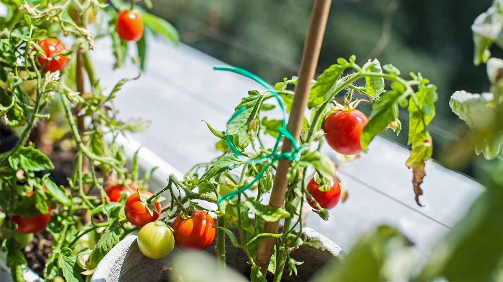
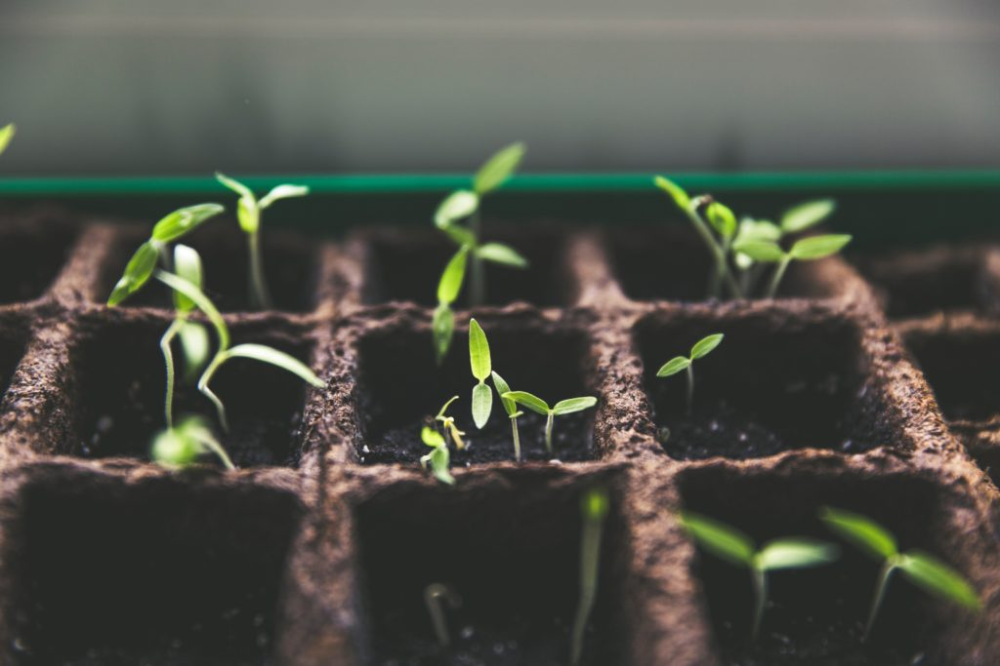
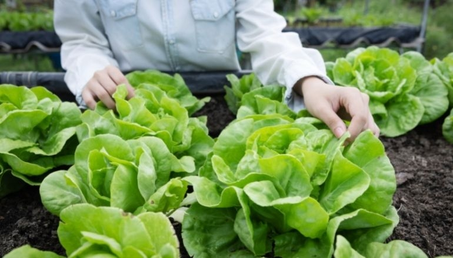

La abundancia de los huertos: Cultivando vida, cosechando salud.



La maravilla de los huertos es un testimonio vivo de la conexión entre la naturaleza y nosotros.
En estos espacios, la tierra se convierte en un lienzo fértil donde sembramos no solo semillas,
sino también esperanzas y sueños de una vida más sana y sostenible.
lo mejor de los huertos va más allá de los vegetales frescos que obtenemos.
Es el proceso mismo lo que nutre nuestra alma y fortalece nuestro vínculo con la naturaleza.
En cada surco que cavamos, en cada planta que cuidamos, encontramos una conexión profunda con la tierra y
con nosotros mismos.
los beneficios para la salud son invaluables.
Los alimentos frescos que cosechamos están cargados de nutrientes y sabor, contribuyendo a una dieta
equilibrada y a una vida más saludable.
Y no podemos olvidar el ejercicio físico y mental que implica trabajar la tierra, un remedio natural para el
estrés y la ansiedad de la vida moderna.